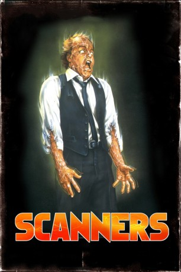

#4189 Scanners - Ihre Gedanken können töten
 
 IMDB-Wertung: 6.8 / 10
IMDB-Wertung: 6.8 / 10  Metascore: 0
Metascore: 0 
Außenseiter Vale leidet unter seiner telepathischen Begabung, Gedanken lesen zu können. Als ihn Agenten des mysteriösen Dr. Ruth entführen, wird ihm bei Experimenten klar, dass er weitere Gaben hat. Grund ist das Medikament "Ephemerol", das Frauen zur Zeit von Vales Geburt während der Schwangerschaft verabreicht wurde. Vale trifft auf Halbbruder Revok, der alle Telekineten und Telepathen, "Scanner" genannt, aufspürt, um mit ihrer Hilfe die Weltherrschaft anzutreten. Vale organisiert eine Anti-Scanner-Brigade. Die Brüder liefern sich ein tödliches Duell.
Jahr: 1981
Dauer: 104 Minuten
FSK: 16
Land: Kanada Studio: Explosive-MediaTonspuren: DTS - ,
Untertitel:
Auflösung: 1080p (1920x1032) Größe: 6727 MB
Genre: Action, Horror, Sci-Fi, Thriller
Regisseur:  David Cronenberg
David Cronenberg
Drehbuch: Craig Borten
Soundtrack:
Darsteller:
 Jennifer O'Neill als Kim Obrist
Jennifer O'Neill als Kim Obrist- Stephen Lack als Cameron Vale
 Patrick McGoohan als Dr. Paul Ruth
Patrick McGoohan als Dr. Paul Ruth- Lawrence Dane als Braedon Keller
 Michael Ironside als Darryl Revok
Michael Ironside als Darryl Revok Anthony Sherwood als Scanner in Attic
Anthony Sherwood als Scanner in Attic- Alex Stevens als CONSEC Programmer 3
 Chris Britton als Hazmat-Suit Worker , uncredited
Chris Britton als Hazmat-Suit Worker , uncredited Leon Herbert als Hazmat-Suit Worker , uncredited
Leon Herbert als Hazmat-Suit Worker , uncredited William Hope als Hazmat-Suit Worker , uncredited
William Hope als Hazmat-Suit Worker , uncredited- Thomas Kovacs als Boyfriend , uncredited
 Robert A. Silverman als Benjamin Pierce
Robert A. Silverman als Benjamin Pierce- Larry Perkins als Security One
- Mavor Moore als Trevellyan
- Adam Ludwig als Arno Crostic
- Murray Cruchley als Programmer 1
- Fred Doederlein als Dieter Tautz
- Géza Kovács als Killer in Record Store
- Sonny Forbes als Killer in Attic
- Jérôme Tiberghien als Killer in Attic
- Denis Lacroix als Killer in Barn
- Elizabeth Mudry als Killer in Barn
- Victor Désy als Dr. Gatineau
- Louis Del Grande als First Scanner
- Ken Umland als Scanner in Attic
- Anne Anglin als Scanner in Attic
- Jock Brandis als Scanner in Attic
- Jack Messinger als Scanner at Door
- Victor Knight als Dr. Frane
- Karen Fullerton als Pregnant Girl
- Margaret Gadbois als Woman in Mall
- Terrance P. Coady als Security 1 Car Passenger
- Steve Michaels als Security 1 Car Driver
- Malcolm Nelthorpe als Ray, Security 2 Car Driver
- Nicholas Kilbertus als Security 2 Car Partner
- Don Buchsbaum als Large Man in Mall
- Roland Nincheri als Large Man in Mall
- Kimberly McKeever als Hallucinating Guard
- Robert Boyd als Hallucinating Guard
- Graham Batchelor als Yoga Technician
- Dean Hagopian als CONSEC Programmer 2
- Neil Affleck als Medical Student in Mall
- John Brasington als Hazmat-Suit Worker , uncredited
- Jack Canon als Hazmat-Suit Worker , uncredited
- Richard Chapman Jr. als Hazmat-Suit Worker , uncredited
- Ian McQue als Scanner / Security Guard , uncredited
Datei: X:\1981\Scanners - Ihre Gedanken können töten (1981, FSK16, 1920x1032).mkv seit 29.07.2016
Festplatte: HD 1980-1986
 Es gibt insgesamt 33 Filme in der Gruppe '1981'
Es gibt insgesamt 33 Filme in der Gruppe '1981'